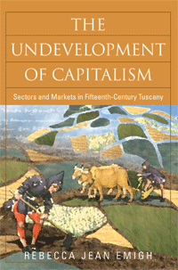

<body bgcolor="#FFFFFF" text="#000000" link="#0000FF" vlink="#CC0000" alink="#CC0000"><center><hr width="350" size="1" align="center" noshade>How the economic advances of one city can slow the economic growth of a region<hr width="350" size="1" align="center" noshade><p><a href="https://cdcshoppingcart.uchicago.edu/Cart/ChicagoBook.aspx?ISBN=9781592136186&&PRESS=temple" target="_top">Buy this book!</a> | <a href="https://cdcshoppingcart.uchicago.edu/Cart/Cart.aspx?PRESS=temple" target="_top">View Cart</a> | <a href="https://cdcshoppingcart.uchicago.edu/Cart/Cart.aspx?PRESS=temple" target="_top">Check Out</a></p><p></p></center><!--none//--><h1>The Undevelopment of Capitalism</h1>
<H2>Sectors and Markets in Fifteenth-Century Tuscany</H2>
<h3>Rebecca Jean Emigh</h3>
<P>cloth 1592136184 $94.50, Nov 08, <FONT COLOR=#990033>Available</FONT>
<br>paper 1592136192 $34.95, Nov 08, <FONT COLOR=#990033>Available</FONT>
<br>Electronic Book 1592136206 $34.95 <FONT COLOR=#990033>Available</FONT>
<BR> 288 pp
6x9
15&nbsp;tables 1&nbsp;map(s) 3&nbsp;figures
</P><BLOCKQUOTE><I>"Emigh has written a very important book that will have a big impact on
historical sociology. Based on first-rate research and innovative methods of analysis, she offers an incisive review of previous theories of the transition to capitalism, and shows how the dynamism and efficiencies of urban markets serve to undermine rural markets."</I>
<br>&#151<b>Richard Lachmann</b>, Department of Sociology, State University of New York at Albany</I></BLOCKQUOTE>
<p>In <i>The Undevelopment of Capitalism</i>, Rebecca Jean Emigh argues that the expansion of the Florentine economic market in the fifteenth century helped to undo the development of markets in rural Tuscany, leading to the overall contraction of the urban and rural economy. As this highly developed urban market penetrated rural regions, it actually erased rural market institutions that rural inhabitants had used to organize agricultural production and family life. Thus, an advanced economy at the time of the late Middle Ages and early Renaissance "undeveloped" over time. The economic development of this region in Italy was delayed as it failed to keep pace with the rest of Europe.
<p>Using a negative case methodology to show how urban and rural markets
change, Emigh employs methods of historical sociology and sectoral theories
to examine how markets can prosper and suffer at the same time. She shows
how sectoral relations are crucial to transitions to capitalism and how
capitalist development can also contract markets.
<BR>&nbsp;<h2>Excerpt</h2><P>Excerpt available at <a href="http://www.temple.edu/tempress">www.temple.edu/tempress</a></p>
<BR>&nbsp;<h2>Reviews</h2>
<p><i>"Emigh addresses important theoretical and methodological issues related to fifteenth century Tuscan socioeconomic structures....The heart of the book provides a great deal of empirical evidence that Emigh has collected or interpreted, which for this reviewer was the book's most significant contribution.... Emigh's book can be considered the best of what American historical social science research currently has to offer.... As such, it constitutes an important scholarly contribution and will remain a major accomplishment speaking to a variety of disciplines for many years to come." </i><br>&#151<b><i>Contemporary Sociology</i></b>
<p><i>"This excellent book is the culmination and synthesis of years of building-block studies by this author.... </i>The Undevelopment of Capitalism<i> is an important book, destined to become a classic." </i><br>&#151<b><i>The Journal of Interdisciplinary History</i></b>
<p><i>"This rich and carefully argued book should shape the future study of Italian economic development and also provide a model for, and justification of, the analysis of sectoral relations in other times and places." </i><br>&#151<b><i>The International Journal of Comparative Sociology</i></b>
<p><i>"At the heart of Emigh’s book lies a comparative study of two rural areas in the years about 1427–30, when the great territory-wide survey of household wealth known as the catasto was drawn up. Emigh matches catasto entries with notarial records to come up with impressively detailed pictures of property holding and lease arrangements in these years.... [T]he portraits she sketches from the documentation are invaluable." </i><br>&#151<b><i>The Journal of Speculum</i></b>
<BR>&nbsp;<h2>Contents</h2><P>
<br>List of Tables and Figures
<br>Acknowledgements
<br>Methodological Notes
<br>1. Capitalism and Tuscany: Investigating the Past
<br>2. Tuscany as a Negative Case of Transition to Capitalism
<br>3. Linking Sectors and Markets
<br>4. Smallholding: The Circulation of Property
<br>5. Urban Involvement in Agriculture
<br>6. Sharecropping: The Consolidation of Property
<br>7. Comparing Productivity, Income, and Indebtedness
<br>8. Conclusions
<br>Bibliography
<br>Index
</P><BR>&nbsp;<H2>About the Author(s)</H2>
<table><tr><td valign="top"><img src="/tempress/authors/1902_au.gif" height="90" width="75"></td><td width="100%" valign="middle"><p><b>Rebecca Jean Emigh</b> is Professor of Sociology at the University of California, Los Angeles.</P></td></tr></table>
<BR><H2>Subject Categories</H2>
<p><A HREF="/tempress/sociology.html" TARGET="_top">Sociology</a>
<BR><A HREF="/tempress/business.html" TARGET="_top">Business/Economics</a>
<BR><A HREF="/tempress/history.html" TARGET="_top">History</a>
</p>
<BR><h2 class="inpageheading">In the series</H2>
<P><I><a href="http://www.temple.edu/tempress/phsc.html" onMouseOver="window.status='Click for other books in this series!'; return true;" onMouseOut="window.status=''; return true;" target="_top">Politics, History, and Social Change</a></i>, edited by John C. Torpey.
</p><p>This series will disseminate serious works that analyze the social changes that have transformed our world during the twentieth century and beyond. The main topics to be addressed include international migration; human rights; the political uses of history; the past and future of the nation-state; decolonization and the legacy of imperialism; and global inequality. The series will also translate into English outstanding works by scholars writing in other languages.</p>
<p align="center"><a href="https://cdcshoppingcart.uchicago.edu/Cart/ChicagoBook.aspx?ISBN=9781592136186&&PRESS=temple" target="_top">Buy this book!</a> | <a href="https://cdcshoppingcart.uchicago.edu/Cart/Cart.aspx?PRESS=temple" target="_top">View Cart</a> | <a href="https://cdcshoppingcart.uchicago.edu/Cart/Cart.aspx?PRESS=temple" target="_top">Check Out</a></p><p><font face="Arial" size="1"><a href="copyright.html" onMouseOver="window.status='Web Copyright Policy';return true;" onMouseOut="window.status=''" title="Web Copyright Policy">&copy;</a> 2015 <a href="http://www.temple.edu" target="new" onMouseOver="window.status='Link to Temple University home page';return true;" onMouseOut="window.status=''" title="Link to Temple University home page">Temple University</a>. All Rights Reserved. http://www.temple.edu/tempress/titles/1902_reg.html</font></p>